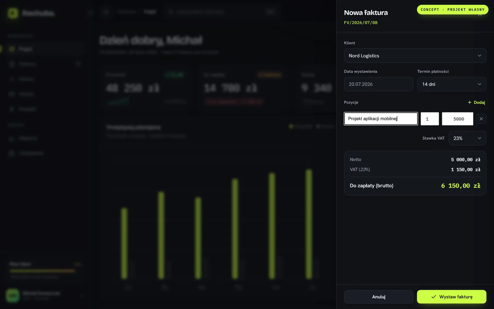
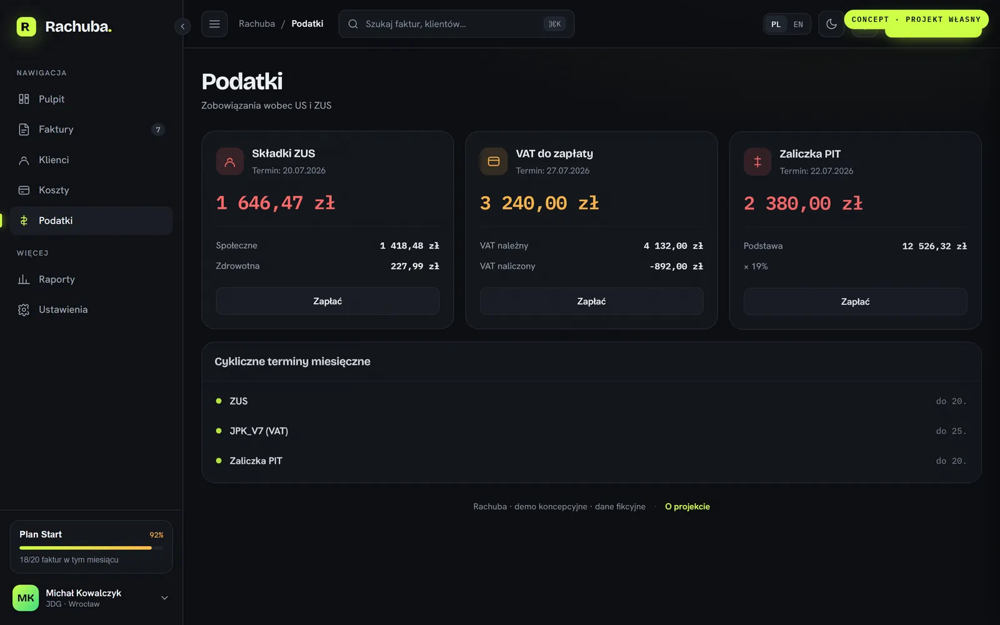
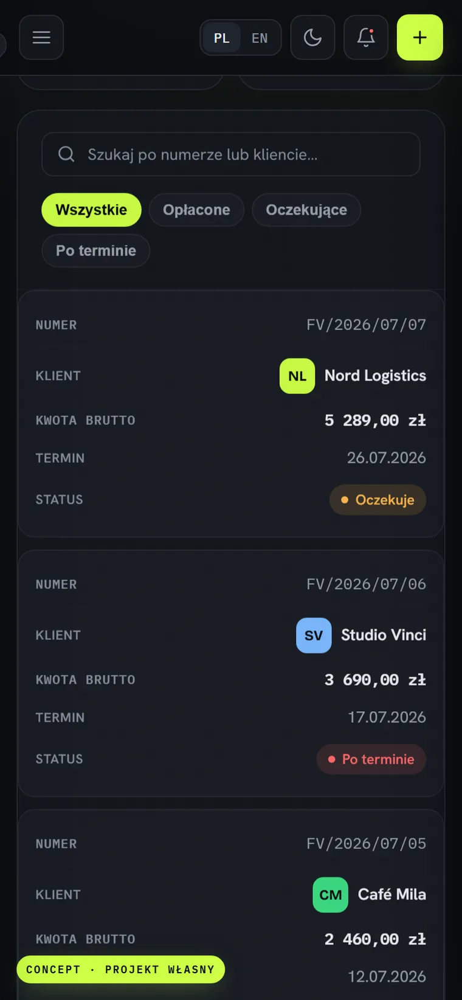

Rachuba
Panel finansowy dla polskich freelancerów (JDG): faktury, koszty i terminy podatkowe ZUS / VAT / PIT w jednym miejscu — z kreatorem faktury liczącym VAT na żywo.
Lighthouse (desktop) na żywym wdrożeniu · LCP 1,2 s · TBT 0 ms
Kontekst i wyzwanie
Polscy freelancerzy na JDG toną w terminach: ZUS do 20., JPK_V7 do 25., zaliczka PIT. Większość narzędzi to albo pełna księgowość dla biur, albo zagraniczne apki bez polskich realiów.
Cel: panel, który w 5 sekund odpowiada na trzy pytania freelancera — ile zarobiłem, kto mi zalega, co muszę zapłacić fiskusowi — i sam pilnuje terminów podatkowych.
Proces
Research i założenia
Zmapowałem polski kalendarz podatkowy JDG i realne bolączki: przeoczone terminy, ręczne liczenie VAT, brak przeglądu cashflow.
UX — kluczowe przepływy
Trzy główne flowy: pulpit-przegląd, kreator faktury z VAT liczonym na żywo, widok terminów z odliczaniem dni i przesunięciem weekendowym.
UI — system wizualny
Ciemny control-room: skupienie na liczbach, jeden sygnałowy akcent, kwoty monospace z tabular-nums jak w księdze — realna decyzja UX, nie ozdoba.
Stack i architektura
Czysty HTML/CSS/JS — zero zależności i frameworka. Pełne i18n PL/EN (z poprawną polską liczbą mnogą), routing i cała logika po stronie klienta.
Wdrożenie i audyt
Deploy na GitHub Pages, audyt Lighthouse i optymalizacja dostępności do 100/100 (inert dla paneli, poprawki ról ARIA i kontrastu).
Paleta
Typografia
Rozwiązanie



